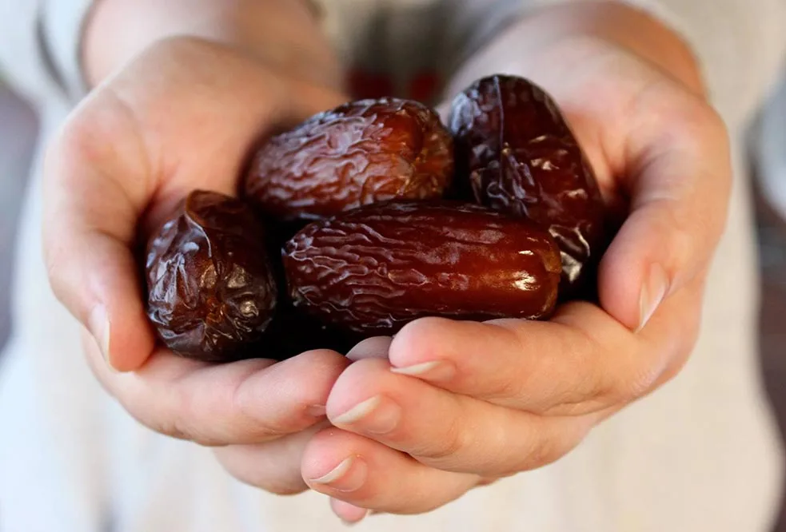
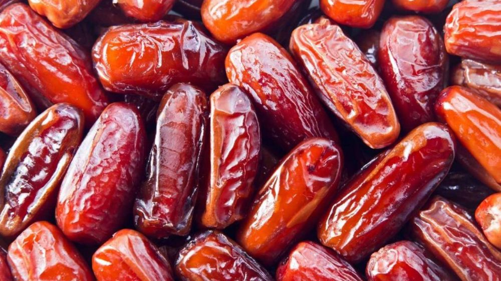
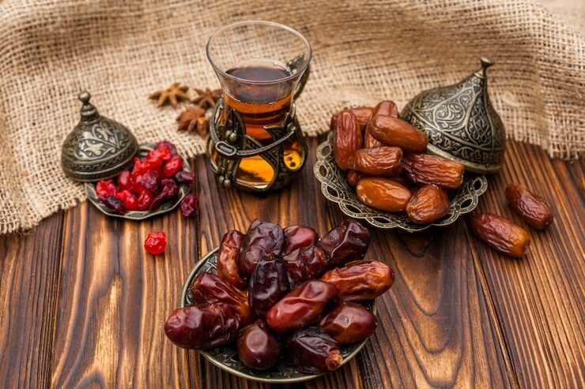
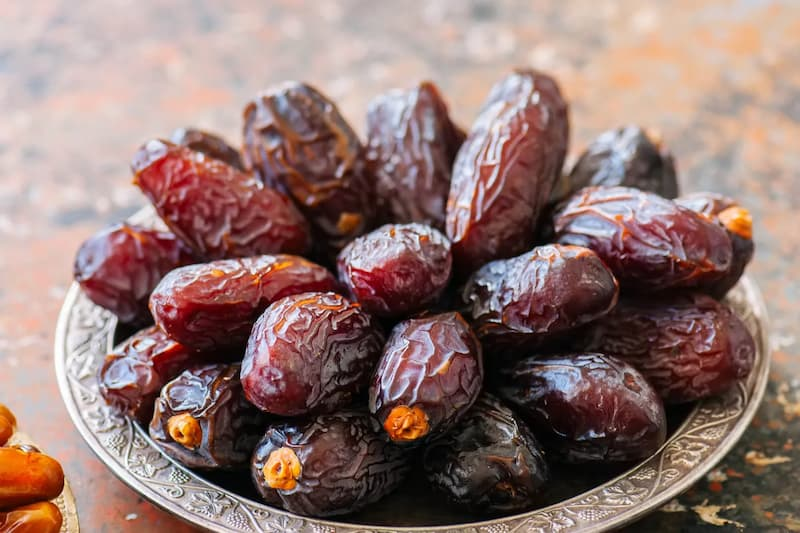

خرمای پیارم
خرما یکی از مهمترین محصولات کشاورزی مناطق گرمسیری جهان به شمار میرود و ایران نیز به عنوان یکی از بزرگترین تولیدکنندگان خرما، انواع متنوعی از این محصول ارزشمند را تولید میکند. در میان ارقام مختلف خرما، خرمای پیارم به دلیل کیفیت بالا، طعم دلپذیر و ارزش غذایی فراوان، جایگاه ویژهای در بازارهای داخلی و خارجی دارد و به عنوان لوکسترین خرمای ایران شناخته میشود.
بیشتر

خرما مضافتی بم
خرمای مضافتی شامل آهن، انرژی، کلسیم، پتاسیم و مواد مفید دیگر میشود. مصرف خرمای مضافتی برای بهبود وضعیت قلب،...
بیشتر

رطب شیرین
خرما خواص زیادی برای سلامتی بدن دارد که از جملهی آنها میتوانیم به کاهش وزن و چربیسوزی، جلوگیری از سرطان روده و...
بیشتر

خرما مجول
خرمای مجول که به “ملکه خرماها” معروف است، یکی از معروفترین و پرطرفدارترین انواع خرما در جهان است. این نوع خرما بیشتر در کشور مراکش تولید میشود و به دلیل اندازه بزرگ، بافت نرم و طعم بسیار شیرینش، شهرت جهانی دارد.
بیشتر

خرما کبکاب
خرمای کبکاب یکی از انواع خرمای محبوب و پرمصرف در ایران است که بیشتر در استانهای بوشهر و خوزستان کشت میشود. این خرما دارای رنگ قهوهای روشن تا تیره و بافتی نیمهمرطوب است. کبکاب به دلیل طعم شیرین و گوشتی که دارد، هم به صورت تازه و هم خشکشده مصرف میشود.
بیشتر

خرما زاهدی
خرمای زاهدی یکی از انواع خرماهای پرطرفدار و صادراتی ایران است که عمدتاً در استانهای خوزستان، فارس، و بوشهر کشت میشود. این خرما دارای رنگ زرد طلایی و بافتی خشک و نیمهخشک است. طعم شیرین و ملایم خرمای زاهدی، همراه با ماندگاری بالا، آن را به گزینهای مناسب برای صادرات تبدیل کرده است.
بیشتر

خرما استعمران
خرمای استعمران، که در برخی مناطق به آن خرمای سعمران نیز گفته میشود، یکی از انواع محبوب و اقتصادی خرما در ایران است. این خرما عمدتاً در استان خوزستان کشت میشود و دارای رنگ قهوهای تیره و بافتی نیمهخشک است. طعم شیرین و خوشمزه، همراه با قابلیت نگهداری طولانی مدت، خرمای استعمران را به یک گزینه مناسب برای صادرات تبدیل کرده است.
بیشتر

خرما دیری
خرمای دیری یکی از انواع خرماهای خوشمزه و پرطرفدار است که عمدتاً در مناطق جنوبی ایران و همچنین کشورهای حوزه خلیج فارس کشت میشود. این خرما دارای رنگ قهوهای تیره و بافتی نیمهمرطوب تا خشک است. طعم شیرین و کاراملی خرمای دیری، آن را به یک انتخاب محبوب برای مصرف روزانه تبدیل کرده است.
بیشتر

.png)
.png)